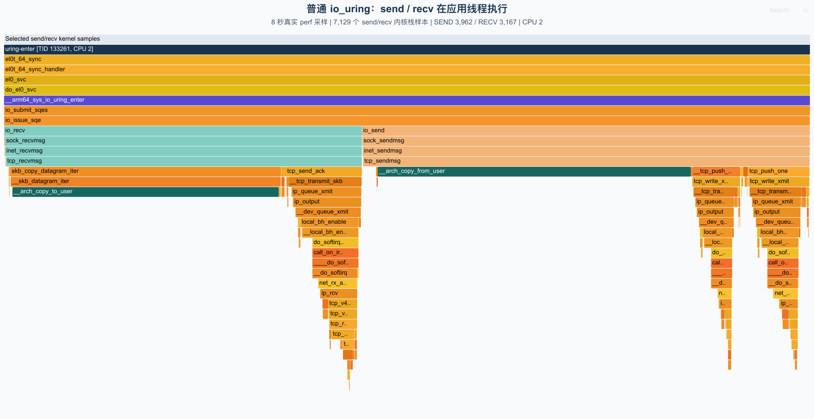
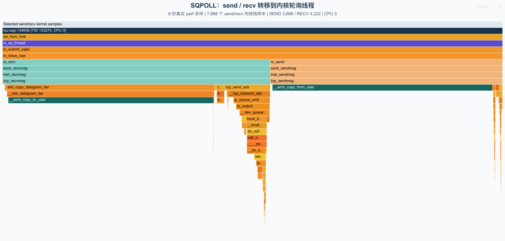
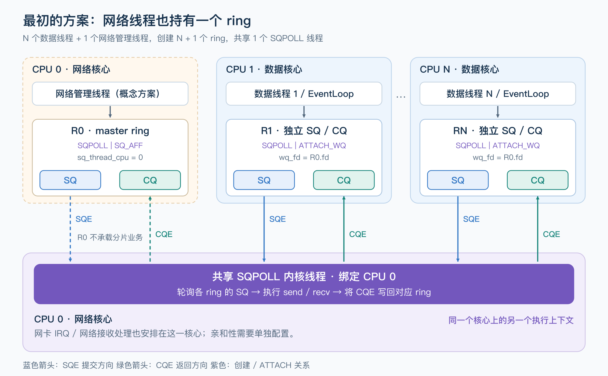
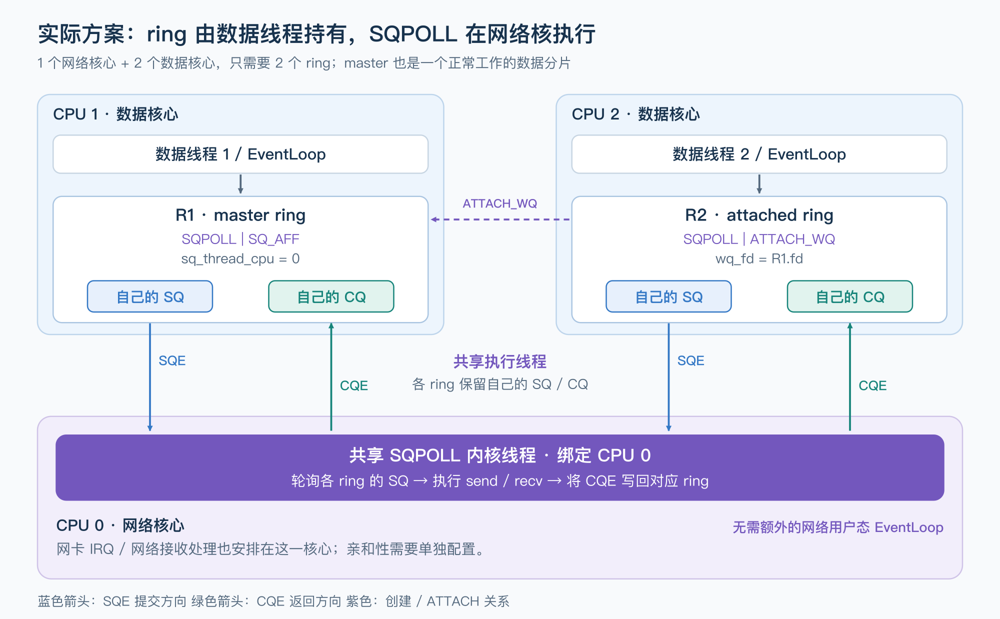

io_uring非对称工作组的一些想法
本文由我本人和GPT6 aster max一同完成 相关实验和图片均由本人指导GPT完成
我最近在看Offloading I/O to Dedicated Cores: An Asymmetric io_uring Backend for Seastar and ScyllaDB， 这里提到了一种我从来没有想到过的sqpoll用法
我曾经对sqpoll由一些不恰当的认知，源于我对pre core模型的误读
- 只是节约一次io_uring_enter的syscall但是要付出一个内核线程的维护开销
- 在每一个核心上都建立一个io_uring实例的EventLoop，用IORING_SETUP_ATTACH_WQ的方式只使用一个sqpoll进行poll全部的io_uring sq，这样会导致线程多余核心数引入不必要的调度开销
- sqpoll只是转移了相关inline进来的io操作的调用从submit线程到sqpoll线程罢了，不值得用
怎么说呢，其实这里面只看固有思维带来的per core肯定都是对的，尤其是第3点，请看下面的采集图
下面两张图来自本地 Ubuntu 的实际采样，内核是 7.0.11，架构为 ARM64。两次运行使用同一个 TCP loopback 测试程序：每轮通过 io_uring 发送、接收 64 KiB，应用线程固定在 CPU 2，各采样 8 秒。

非 SQPOLL 模式下，选出的 7,129 个收发样本都位于应用线程 uring-enter 中。顺着紫色的 __arm64_sys_io_uring_enter 向下，可以看到 io_submit_sqes → io_issue_sqe，然后分成 io_send 和 io_recv 两条路径，继续进入 TCP 收发和内存拷贝函数。
而对于sqpoll而言
这次给 ring 加上 IORING_SETUP_SQPOLL | IORING_SETUP_SQ_AFF，将 sq_thread_cpu 设置为 3，应用线程仍然留在 CPU 2。

选出的 7,888 个收发样本全部位于 CPU 3 的 iou-sqp-134656 线程中。上层调用链变成了 ret_from_fork → io_sq_thread → io_submit_sqes → io_issue_sqe，下面仍然是相同的 io_send / io_recv，连 __arch_copy_from_user / __arch_copy_to_user 也一起转移了过去。这里执行的是内核里的收发函数，并不是 SQPOLL 线程再发起一次用户态的 send/recv syscall。
很明显非阻塞尝试的那一步，也就是前文提到inline进来的io操作的调用从submit线程到sqpoll线程
但是我在阅读 ScyllaDB 的文章之后，我发现这个新的架构很有意思相比于每一个核心上都建立一个io_uring实例的EventLoop，很适合在网络io处理流程中cpu不是瓶颈，从网络IO解放数值计算线程且让其不会受到网络中断的困扰
不过这个架构有几个显而易见的前提
- 中断队列的个数远少于CPU核心数目，这也是为什么你可以观察到有完全非阻塞响应式服务会发现有一批CPU消耗率明显高于其他CPU
- 拥有比较多的核心数目可供计算核心通过share nothing的策略支持大量计算分片
- 我们需要把中断绑定到具体的核心上，然后设置sqpoll线程的亲和性到这个核心上
为了简单描述，这里我们就不考虑numa组的问题，虽然文章里面提到了要考虑，但是这个处理起来很简单，根据numa划分cpu组出来，然后再组内划分网络核心和计算核心
这里先简单讲一下 ScyllaDB 的非对称性架构指的是什么，先假设我们中断队列和CPU数目的比例是1:3，那么我们就按照1:2的比例划分一个组，这个组汇总需要隔离一个核心绑定处理中断，两个核心绑定处理分片数据
那么数据核心怎么接受包呢？是网络核心通过actor架构投递么？由于 ScyllaDB 实现的共享队列的开销过大，所以肯定不能采用这种形式
那么考虑到sqpoll的想法，最好的显然是网络核心持有一个io_uring并开启sqpoll，数据核心也持有一个io_uring， 数据核心填充自己的sq，收割自己的cq，这些都不需要发起syscall，还可以在空闲时利用io_uring_enter沉睡，而网络核心的sqpoll去poll事件之后在中断的绑核线程执行这些inline来的io操作，同时处理各种arm poll之类的回调再发布到对应的cq中， 这样io中断，io发送，io读取亲核性很好，数据核心也不会被中断打扰，也没有syscall干涉，可以全力进行数值计算

先把这个想法画出来：网络管理线程持有 R0，创建绑定 CPU 0 的 SQPOLL 线程；数据线程分别持有 R1 ... RN，创建时通过 IORING_SETUP_SQPOLL | IORING_SETUP_ATTACH_WQ 和 wq_fd = R0.fd 加入同一组。
这样总共有 N + 1 个 ring，但只有一个 SQPOLL 线程。每个数据线程仍然只往自己的 SQ 中填入请求、从自己的 CQ 中收割完成事件，共享的是内核执行线程，SQ/CQ 并没有合并成一个供所有数据线程争用的大队列。图中 CPU 0 上的网络管理线程和 SQPOLL 内核线程是两个不同的执行上下文，只是绑定在同一个核心上。
其实这里还有一点优化，我思维惯性地把核心和线程两个概念绑定在一起，其实这是不对的，按照上面的想法一个组中一个网络核心，两个数据核心，我们应该是拥有3个io_uring核心对么？
如果我说只需要两个呢？
实际的需求只是要求sqpoll线程运行在中断绑定的核心上而已，所以我们完全可以只用两个io_uring分别为两个数据核心持有，其中一个我们叫它master io_uring,他负责创建sqpoll线程并设置亲核性到中断核心上，另外一个只需要attach master io_uring借即可

以一个网络核心、两个数据核心为例，CPU 1 上的数据线程创建 R1，设置 IORING_SETUP_SQPOLL | IORING_SETUP_SQ_AFF 和 sq_thread_cpu = 0。CPU 2 上的数据线程创建 R2，设置 IORING_SETUP_SQPOLL | IORING_SETUP_ATTACH_WQ，并让 wq_fd 指向 R1。
R1 就是 master ring，但它照常承载 CPU 1 上的数据分片的收发。master 的含义只是它先创建了供本组共享的内核执行资源，不代表它必须由一个网络用户态线程持有，也不代表其他 ring 的请求需要先转发到它的 SQ 中。CPU 0 上的 SQPOLL 线程直接轮询 R1、R2 各自的 SQ，并将完成事件写回请求所属 ring 的 CQ。
这也对应了 Seastar 的实现：每组的第一个应用 shard 被选为 master；创建 master 和 attached ring 时分别设置上述参数。它还通过 io_uring_register_iowq_aff() 设置共享 io-wq worker 的亲和性，图中只展开了 SQPOLL 这条执行路径。
这里的“不需要 syscall”有一个边界：SQPOLL 保持活跃时，应用可以只操作共享内存中的 SQ/CQ；如果它因空闲而休眠，提交方看到 IORING_SQ_NEED_WAKEUP 后，仍要调用带 IORING_ENTER_SQ_WAKEUP 的 io_uring_enter。应用主动阻塞等待完成事件时也会进入内核。因此无需另设一个网络用户态线程定时调用 enter，但数据线程也并非永远不会调用它。这个行为在 io_uring_setup 的 SQPOLL 说明中有明确描述。
似乎看起来没什么问题？绝佳的亲和性，无锁的方案设计，干净的架构，但是文章里面提到了两点很有意思
If your workload does more than a few microseconds of compute per request alongside network I/O — and you’re running roughly multiple application cores per networking core — then strongly consider benchmarking this against your current setup
和
It turns out that the single networking core spends around 40-50% of its cycles on memory copying. This is the necessary buffer copying that the Linux kernel performs while handling I/O related operations
这种后端对比对称性的per core你会发现，我们极大的减少了处理网络的线程，也就是把网络IO相关syscall的内存拷贝集中到了少数的核心上，本来这些都是大家平摊的，这就导致了网络核心的过载
零拷贝可以作为缓解网络核心拷贝压力的后续方向，但发送和接收需要分别讨论。目前 io_uring 的零拷贝接收依赖 DEFER_TASKRUN，无法直接用于这里的 SQPOLL 后端，还需要内核支持或调整 I/O 驱动方式，同时满足网卡等接收链路条件。